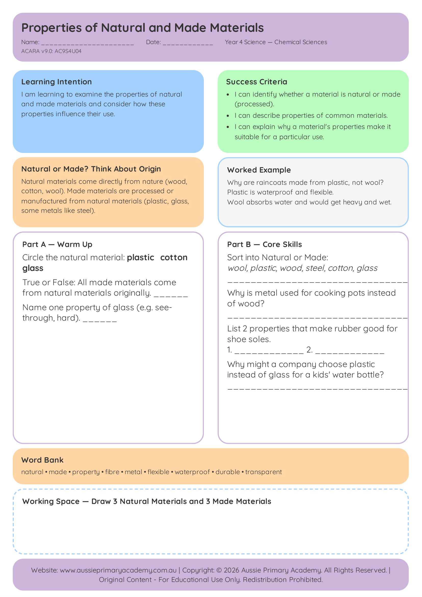

Year 4 · Science · Chemical Sciences · Free Printable
Properties of Natural and Made Materials
Compare observable properties of natural and manufactured materials.
Worksheet Preview

Learning Intention
Students will compare observable properties of natural and manufactured materials.
Australian Curriculum
AC9S4U04
Natural and processed materials have a range of physical properties that can influence their use.
Teacher Notes
Provide real samples (wood, plastic, metal, fabric). Students test and record properties such as hardness, flexibility and absorbency.
Skills Practised
- Observing properties
- Comparing materials
- Natural vs made
- Suitability for purpose